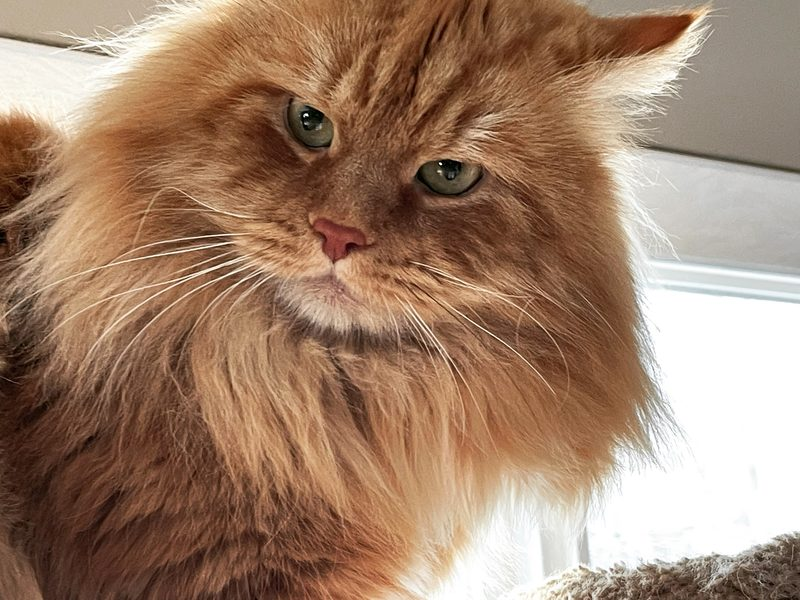

Siberian cattery · Wasilla, Alaska
Siberian cats, raised at home in Alaska
ALASKASIBCAT is a small family cattery registered with CFA. We raise our kittens underfoot, with attention and patience, and we are happy to answer your questions before you decide.

Available kittens
We do not have kittens listed right now. If you would like to hear about future litters, please get in touch and we will let you know when something is confirmed.
About the cattery
ALASKASIBCAT is a small cattery in the Mat-Su Valley, near Wasilla. Our cats are part of the family, and our kittens grow up in a home environment.
Photo of the breeding cats
How to adopt a kitten
- Get in touch. Tell us a little about your home and what you are looking for.
- Choose a kitten. We will share current information and answer questions.
- Reserve and plan the handover. A $350 reservation deposit, credited toward the price, reserves the kitten; pickup or delivery is arranged with you directly.